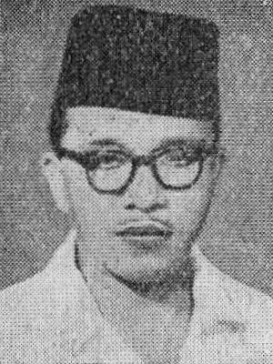
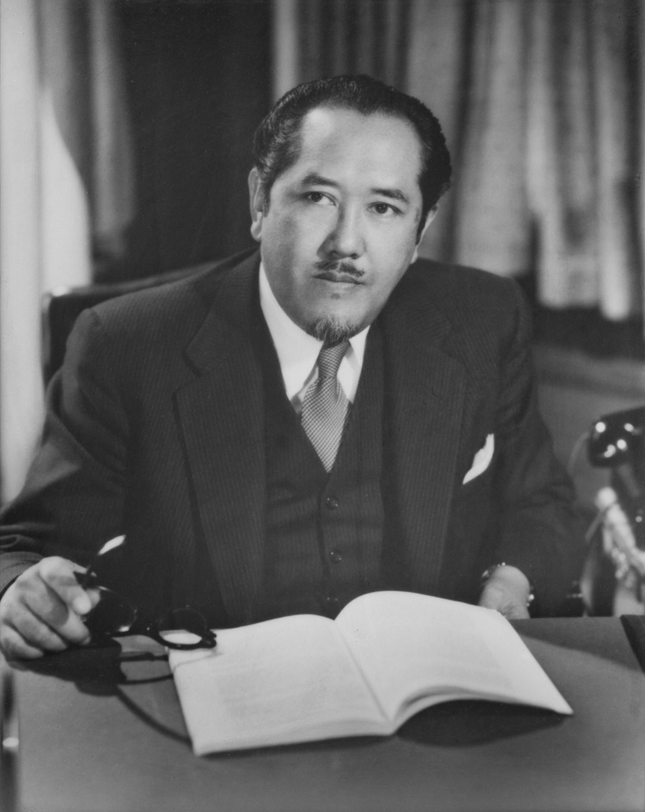

Kabinet Natsir, yang memil iki pro gram ut ama untuk mengembalikan Irian Barat ke Indonesia, gagal dan dian ggap ti dak berh asil. Mosi tidak percaya muncul dari Parlemen, mengakibat kan jatu hnya kab inet dan penge mbalian mandat kepada Pres iden Soekarno. Sukiman Wi rjosand jojo kemud ian dit unjuk oleh Soekarno untuk membe ntuk ka binet baru, yang sering disebut sebagai Kab inet Suk iman. Kabinet ini juga jatuh kar ena dian ggap melan ggar kebijakan politik lu ar negeri be bas aktif deng an mene rima bantu an mili ter d an eko nomi dari Ame rika Serik at (MSA). Akhi rnya, Sukiman mengem balikan mandat kepada Soek arno setelah kabinet ini jatuh.
 Kabinet Burhanudin Harahap, Pada masa pemerintahan Kabinet Burhanudin Harahap, diselenggarakan Pemilihan Umum pertama sejak Indonesia merdeka. Pemilu dilaksanakan dua kali, yaitu pada 29 September 1955 untuk memilih anggota DPR dan pada 15 Desember 1955 untuk memilih anggota Dewan Konstituante. Konstituante, sebagai badan independen, bertugas membentuk UUD baru menggantikan UUD 1950 selama masa Demokrasi Liberal. PNI, MASYUMI, NU, dan PKI menjadi empat besar pemenang Pemilu ini. Kabinet ini dianggap berhasil menyelenggarakan pemilu dan setelah tugasnya selesai, dibentuk kabinet baru.
Kabinet Sukiman-Suwirjo, Kabinet Sukiman-Suwirjo diumumkan pada 26 April 1951 dan bertugas hingga 23 Februari 1952. Programnya fokus pada menjalankan negara sebagai negara hukum, menjamin keamanan, dan memperbaiki organisasi kekuasaan. Mereka aktif dalam mempercepat penempatan mantan pejuang, menyelesaikan persiapan pemilihan umum, dan mendorong otonomi daerah. Di bidang ketenagakerjaan, kabinet merancang undang-undang terkait serikat buruh, perjanjian kerja sama, upah minimum, dan pertikaian perburuhan. Dalam politik luar negeri, kabinet menekankan kebijakan bebas dan aktif, mencari perdamaian dunia, mengubah hubungan dengan Belanda menjadi berdasarkan perjanjian internasional, mempercepat peninjauan hasil Konferensi Meja Bundar, dan mencabut perjanjian yang merugikan rakyat dan negara. Terakhir, kabinet berkomitmen menyatukan wilayah Irian Barat ke dalam Republik Indonesia.

Kabinet Wilopo,sete lah kabinet Sukiman ja tuh, Soe karno men unjuk Wil opo untu k memb entuk kabi net ba ru. Kab inet i ni diha dapkan p ada situ asi eko nomi yang sulit d an bany aknya pember ontakan di Su matra dan Sulawesi. Peri stiwa ya ng pal ing kontro versial ada lah insi den Tanjung Mora wa, di mana aparat kea manan den gan kekera san me ngusir peta ni dari ta nah perus ahaan DPV, men yebabkan kematian 5 pet ani. Akibat peristiwa ini, muncul mosi tidak percaya dan kabinet Wilopoja tuh.
Ali Sastroamijoyo I ,Setelah jatu hnya kab inet Wilopo,
Soek arno men unjuk Ali Sastroa mijoyo untuk membentuk kabinet baru. Pada masa ini, terjadi pembe ront akan DI/TII di
Jawa Barat, Sulawesi Selatan, dan Aceh. Meskipun demikian, Indo nesia berhasil menyele nggarakan Konfe rensi Asia
Afrika di Bandung. Kabinet ini dikenal dengan kebi jakan ekonomi Ali-Baba, di mana peng usaha non-pribumi (Baba)
membantu pengusaha pribumi (Ali) melalui pelatihan dan kerj asama. Namun, program ini gagal karena pengusaha
pribumi hanya dianggap alat untuk mendapatkan bantuan kredit dari pemerintah. Kabinet ini jatuh karena masalah
pergantian kepemimpinan di TNI AD dan dianggap tidak mampu mengelola ekonomi Indonesia. Akhirnya, Ali
mengemb alikan mandat kepada Soekarno.

Kabinet Ali II Ali Sastroamijoyo, yang juga menjabat sebagai
Ketua PNI dan pemenang Pemilu 1955, kembali dipercayakan oleh Bung Karno untuk membentuk Kabinet baru. Kabinet ini jatuh
karena adanya perpecahan antara Partai Masyumi dan PNI. Masyumi, sebagai partai yang meraih suara terbanyak kedua setelah
PNI, mendapatkan posisi 5 menteri dalam kabinet Ali II. Meskipun kabinet ini awalnya merupakan koalisi antara PNI, Masyumi,
dan NU, perkembangannya mengalami pecah kongsi antara PNI dan Masyumi, sehingga Masyumi menarik dukungannya. Selain itu,
muncul banyak pemberontakan dan tuntutan dari daerah terhadap pemerintah pusat. Akhirnya, Ali menyerahkan mandat kepada
Presiden.
Kabinet Juanda merupakan kabinet terakhir pada periode Demokrasi Liberal. Kabinet ini juga dikenal sebagai kabinet ZAKEN (Ahli) karena mayoritas menterinya berasal dari kalangan profesional, bukan anggota partai. Tugas utama kabinet ini adalah menyelesaikan persoalan pemberontakan di daerah. Upaya dilakukan dengan mengadakan MUNAS (Musyawarah Pembangunan Nasional) untuk mendengarkan usulan atau aspirasi dari daerah, tetapi upaya ini tidak berhasil. Pada masa ini, juga terjadi upaya pembunuhan terhadap Presiden Soekarno saat beliau sedang menjemput anak-anaknya di Perguruan Cikini, Jakarta Pusat. Meskipun demikian, pada masa kabinet ini, Indonesia berhasil memberikan sumbangan kepada dunia internasional mengenai hukum perbatasan laut antarnegara, yang dikenal dengan DEKLARASI JUANDA. Deklarasi ini menjelaskan cara mengukur wilayah laut suatu negara dari daratannya.